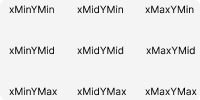

svg
Данные, включённые в атрибут d, описывают команды для path: moveto, line, curve, arc и closepath.
Для создания контура используется элемент <path>.
В качестве данных контура используются следующие команды:
- M = переместить указатель
- L = нарисовать линию
- H = нарисовать горизонтальную линию
- V = нарисовать вертикальную линию
- C = нарисовать кубическую кривую Безье с двумя контрольными точками
- S = нарисовать сглаженную кубическую кривую Безье с одной контрольной точкой
- Q = нарисовать квадратичную кривую Безье с одной контрольной точкой
- T = нарисовать сглаженную квадратичную кривую Безье. Контрольной точкой будет отражение контрольной точки предыдущей команды.
- A = нарисовать эллиптическую кривую
- Z = закрыть контур
Примечание: Если команда записана большими буквами, то позиционирование будет абсолютным. Если маленькими буквами, то позиционирование будет относительным.
moveto
Команды moveto (М или м) устанавливают новые точки, как будто мы поднимаем ручку и начинаем рисовать в новом месте на листе бумаги. Строка кода, составляющего данные path, должна начинаться с команды moveto, как показано выше в примере с лаймом.
Команды moveto, которые следуют за исходной, представляют собой начало нового фрагмента контура, создавая составной контур. Заглавная М указывает, что после нее идут абсолютные координаты, тогда как строчная m указывает на относительные координаты.
closepath
Closepath (Z и z) заканчивает текущий фрагмент контура приводит к рисованию прямой линии от текущей точки до начальной.
Как вставить?
Если хочется выжать максимум из SVG, используйте object. В качестве альтернативы подходит встроенный SVG, который не повлияет на HTTP-запрос, но не будет кешироваться.
object -- лучший вариант, если вам нужно изменять SVG, не
встраивая его в HTML
‹object type="image/svg+xml" data="img/image.svg"›Your browser does not support SVGs‹/object›
Oбъект, вставленный с помощью object, — это другой документ, и css-правила объемлющего документа на него не распространяются, но его css-свойствами можно управлять извне при помощи JS.
use -- обратиться к части элемента
В элементе use мы обращаемся к каждой части svg через id который указан в symbol.
если svg лежит инлайново в html
<svg class="icon">
<use xlink:href="#svg-2"></use>
</svg>
спрайт
<svg class="icon">
<use xlink:href="../img/sprite.svg#svg-2"></use>
</svg>
<svg xmlns="http://www.w3.org/2000/svg">
<defs>
<symbol viewBox="0 0 21 22" id="src-1"> ... </symbol>
<symbol viewBox="0 0 21 18" id="src-2"> ... </symbol>
<symbol viewBox="0 0 21 22" id="src-3"> ... </symbol>
</defs>
<use xlink:href="#src-1"></use>
<use xlink:href="#src-2"></use>
<use xlink:href="#src-3"></use>
</svg>
img -- возможности преобразований в этом формате ограничены
Можно даже использовать SVG как элемент ‹picture›
‹img src="img/image.svg" alt=""›
iframe -- не лучший вариант использования
Это позволит сделать многое, но я не уверен, что это лучший вариант использования
‹iframe src="img/image.svg"›Your browser does not support iframes‹/iframe›
embed
применяется «во внешних приложениях» или «в интерактивном контенте». Вы можете использовать это для SVG, но лучше не стоит.
‹embed type="image/svg+xml" src="img/image.svg" /›
sprite
Проблема инлайнового svg в том что браузер не может его кэшировать. Если имеется большой спрайт то намного выгодней его кэшировать(поместить файл.svg не вставлять код в html а в картинки и вытаскивать от туда).
спрайт в html
Вставляем спрайт на странице html и скрываем элемент svg потому
что, svg по дефолту занимает место 150x300
прячем спрайт
<svg xmlns="http://www.w3.org/2000/svg" display="none">
<defs> блок defs и symbol не отображаются
<symbol viewBox="0 0 21 22" id="src-1">
<path d="..." fill="#000000" />
<path d="..." fill="#000000" />
</symbol>
<symbol viewBox="0 0 21 18" id="src-2">
<path d="..." fill="#000000" />
</symbol>
<symbol viewBox="0 0 21 22" id="src-3">
<path d="..." fill="#000000" />
<path d="..." fill="#000000" />
</symbol>
</defs>
</svg>
В нутри спрайта расположены картинки в тегах symbol, у
каждой свой id для обращения к конкретной отдельно.
<svg>
<use xlink:href="#svg-2"></use>
</svg>
Обращаться к элементам можно внутри структуры svg ведь defs и symbol не отображаются
не скрываем svg что бы use не скрыть
он же используется в этом же svg
<svg xmlns="http://www.w3.org/2000/svg">
<defs>
<symbol viewBox="0 0 21 22" id="src-1">
<path d="..." fill="#000000" />
<path d="..." fill="#000000" />
</symbol>
<symbol viewBox="0 0 21 18" id="src-2">
<path d="..." fill="#000000" />
</symbol>
<symbol viewBox="0 0 21 22" id="src-3">
<path d="..." fill="#000000" />
<path d="..." fill="#000000" />
</symbol>
</defs>
<use xlink:href="#src-1"></use>
<use xlink:href="#src-2"></use>
<use xlink:href="#src-3"></use>
</svg>
спрайт в отдельном файле
Почти то же что и выше но сам svg помещается в отдельный файл sprite.svg и уже от туда
вытаскиваются его части при помощи тега use
в папку с картинками закидываем файл sprite.svg
img --|
|-img.png
|-img.png
|-sprite.svg
в файле html вытаскиваем части из файла sprite.svg
<svg>
<use href="../img/sprite.svg#idтут идет id symbol "></use>
</svg>
<![CDATA[ ...]]>
Есть два способа изменить стили — во встроенном SVG и через внешнее подключение (например, в списке стилей). Чтобы встроить стили, оберните их в тег ‹style› и также внутри ‹ ![CDATA[ ...]]›. Лучше делать именно так, потому что иногда XML анализаторы могут конфликтовать с определённым символами (например › ). Даже если у вас нет шибко модных символов сейчас, лучше всё равно использовать CDATA, вдруг позже они появятся и всё сломают.
‹svg xmlns="http://www.w3.org/2000/svg" viewBox="0 0 68 65"›
‹style type="text/css"›
‹![CDATA[
.firstb {
fill: #000;
transition: fill 0.1s;
}
.firstb:hover {
fill: #4e86b1;
}
]]›
‹/style›
‹/svg›
viewport и vievBox
Если вьюпорт меньше вьюбокса, то он уменьшит весь вьюбокс и покажет все что окажется во вьюпорте
Если вьюпорт больше вьюбокса то он увеличит весь вьюбокс и покажет все что окажется во вьюпорте

Если не указан атрибут preserveAspectRatio, вьюпорт будет показывать весь вьюбокс(если вьюбокс больше то он его уменьшит что бы он весь влез):
preserveAspectRatio
<svg preserveAspectRatio="align meetOrSlice">
<use href="#id" />
</svg>
preserveAspectRatio определяет правило, как пользовательский агент совмещает вьюборт и вьюбокс. Принимает два параметра align и meetOrSlice.
align - указывает как распологается вьюбокс отновительно вьюпорта. Принимает 9 параметров(в какой части совмещать вьюпорт и вьюбокс)
xMin - по оси Х минимальное значение т.е. левый край
yMid - по оси Y центр.
mid - center
max - максимальное значение т.е. низ и право
meetOrSlice - определяет должен ли вьюбокс полностью помещаться в нутрь окна просмотра(вьюпорт), или же только частично.

animation
анимация path
Получить длину path можно с помощью метода path.getTotalLength();
var path = document.querySelector('.path');
var length = path.getTotalLength();
Если данный метод не поддерживается то можно самому установить значение длины
<path d="..." pathLength="1" />
Это ничего не делает само по себе. Путь по прежнему отрисовывается целиком, как будто вы ничего не делали, только теперь длины пути основана на значении от 0 до 1. Теперь мы можем установить значение stroke-dasharray и 1 анимировать смещение в CSS!
<svg class="home" >
<path d=" ... " pathlength="1" />
<line pathlength="1" x1=".." y1=".." x2=".." y2=".." />
<line pathlength="1" x1=".." y1=".." x2=".." y2=".." />
</svg>
svg.home:hover {
animation-name: home-anim;
stroke-dasharray: 1;
stroke-dashoffset: 1;
}
svg.home {
fill: none;
stroke: black;
animation-fill-mode: forwards;
animation-duration: 2s;
animation-timing-function: linear;
animation-iteration-count: infinite;
stroke-linecap: round;
stroke-dasharray: 0;
stroke-dashoffset: 0;
}
svg.home .top,
svg.home .bottom {
stroke-width: 2px;
}
@keyframes home-anim {
0% {
stroke-dashoffset: 1;
}
50% {
stroke-dasharray: 1.1;
stroke-dashoffset: 0;
}
100% {
stroke-dashoffset: 1;
}
}
smil-animation
svg smil animate
Смил анимация пишется внутри svg, она анимирует атрибуты svg при помощи тега animate
Атрибут animate указывается внутри path
Изменяем одну и ту же фигуру(делаем разную форму), не изменяя количество точек, после этого ставим их поочередно в path и анимируем последний.
Что бы не было перескока с последнего на первый надо последним сделать первый path, т.e. первый и последний это один и тот же path
В последнем path нужно указать fill
Вот так:
<svg xmlns="http://www.w3.org/2000/svg">
1 <path
d="..."
fill="transparent" />
2 <path
d="..."
fill="transparent" />
3 <path
d="..."
fill="transparent" />
1 <path> этот path делаем двойным <path></path> т.к. animate aнимирует path
d="..." если написать animate снаружи path то что он будет анимировать???
fill="lightblue">
<animate> внутри animete перечисление изменений
attributeName="d"
dur="10s"
repeatCount="indefinite"
values=" перечисляем path указанные сверху
M150 133.5C150 ...; первый и последний одинаковы что бы не было перескока при конце анимации
M251.748 148C251.748 ...;
M206.5 123.887C206.5 ...;
M260.138 126.5C260.138 ...;
M210.721 138C210.721 ...;
M258.5 124C258.5 193.036 ...;
M150 133.5C150 ...;
"/>
</animate>
</path>
</svg>
Пример smil анимации
mask-image
mask-image:
- mask-clip
- mask-composite
- mask-image
- mask-mode
- mask-origin
- mask-position
- mask-repeat
- mask-size

.mask-image__one{
mask-image: url(../img/mask-image-one.svg);
mask-position: center;
mask-repeat: no-repeat;
mask-size: contain;
}
Вы также можете определить любую произвольную форму и присвоить ее как значение clip-path. в разметке SVG просто оберните фигуру в элемент clipPath, а затем оберните clipPath в блок defs что бы скрыть его в html.
Например:


figures
rect
Для создания прямоугольника и различных его вариаций используется элемент <rect>:
<svg width="400" height="180">
<rect
x="50" y="20"
width="150" height="150"
style="
fill:blue;
stroke:pink;
stroke-width:5;
fill-opacity:0.1;
stroke-opacity:0.9"
/>
</svg>
width и height элемента <rect> определяют ширину и высоту прямоугольника
style определяет CSS свойства прямоугольника
fill определяет цвет заливки прямоугольника
stroke-width определяет толщину рамки прямоугольника
stroke определяет цвет рамки прямоугольника
x определяет позицию прямоугольника слева (например, x="50" помещает прямоугольник в 50px от левого отступа)
y определяет позицию прямоугольника сверху (например, y="20" помещает прямоугольник в 20px от верхнего отступа)
Атрибуты rx и ry закругляют углы прямоугольника
opacity определяет значение прозрачности для всего элемента (допустимый диапазон: от 0 до 1)
fill-opacity определяет прозрачность цвета заливки (допустимый диапазон: от 0 до 1)
stroke-opacity определяет прозрачность цвета прорисовки (допустимый диапазон: от 0 до 1)
Также есть возможность создать закруглённые углы, указав значения в атрибутах rx и ry. К примеру, rx="5" ry="10" сгенерирует горизонтальные стороны углов с радиусом 5px, а вертикальные в 10px.
circle
Координаты cx и cy определяют положение центра круга относительно размеров рабочей области, заданных элементом <svg>.
Атрибут r устанавливает размер внешнего радиуса.
<svg>
<circle cx="50" cy="50" r="40" stroke="black" stroke-width="3" fill="#ED6E46" />
</svg>
Координаты cx и cy определяют положение центра круга относительно размеров рабочей области, заданных элементом <svg>.
Если атрибуты cx и cy не определяются, то центр круга устанавливается в координаты (0,0)
Атрибут r устанавливает размер внешнего радиуса.
ellipse
Элемент <ellipse> описывает эллипс, который строится по центральной точке и двум радиусам.
Эллипс имеет достаточно близкое отношение к кругу. Разница заключается в том, что у эллипса радиусы по горизонтальной и вертикальной оси разные, в то время как у круга они одинаковые.
В то время как значения атрибутов cx и cy помещают центральную точку на указанном расстоянии в пикселях от начала SVG-координат, значения rx и ry определяют радиус сторон фигуры.
<svg>
<';ellipse cx="100" cy="100" rx="100" ry="50" stroke="black" stroke-width="3" fill="#7AA20D" />
</svg>
- cx определяет координату X центра эллипса
- cy определяет координату Y центра эллипса
- rx определяет горизонтальный радиус
- ry определяет вертикальный радиус
line
Значения атрибутов x1 и y1 устанавливают координаты начала линии, а значения x2 и y2 — определяют конец линии.
<svg>
<line x1="0" y1="0" x2="200" y2="200" style="stroke:rgb(255,0,0);stroke-width:2" />
</svg>
- x1 определяет координату X стартовой точки линии
- y1 определяет координату Y стартовой точки линии
- Атрибут x2 определяет координату X конечной точки линии
- Атрибут y2 определяет координату Y конечной точки линии
polyline Ломаная линия
<polyline> определяет набор соединённых отрезков прямой линии, что в результате даёт, как правило, незамкнутую фигуру (начало и конец точек которой не связаны).
<svg>
<polyline points="0,40 40,40 40,80 80,80 80,120 120,120 120,160" fill="white" stroke="#BBC42A" stroke-width="6" />
</svg>
Значения в points определяют положение фигуры по осям x и y от начала до конца фигуры и разбиты по парам x,y во всём списке значений.
Нечётное число точек является ошибкой.
polygon Многоугольник
Элемент <polygon> используется для создания графической фигуры, содержащей как минимум три стороны.
Элемент <polygon> определяет замкнутую фигуру состоящую из связанных линий.
Вершины многоугольника заданы последовательностью из восьми пар значений х, y.
points определяет координаты X и Y каждого угла многоугольника
Элемент path
path представляет собой контур фигуры. Эта фигура может быть заполнена, обведена, использована как направляющая для текста и/или как контур обрезки.
Данные path содержатся в атрибуте d внутри элемента <path>, определяя форму фигуры:
<path d="<конкретные данные path>" />
<svg width="258px" height="184px">
<path fill="#7AA20D" stroke="#7AA20D" stroke-width="9" stroke-linejoin="round"
d="M248.761,92c0,9.801-7.93,17.731-17.71,17.731c-0.319,0-0.617,
0-0.935-0.021c-10.035,37.291-51.174,65.206-100.414,65.206 c-49.
261,0-90.443-27.979-100.435-65.334c-0.765,0.106-1.531,0.149-2.
317,0.149c-9.78,0-17.71-7.93-17.71-17.731 c0-9.78,7.93-17.71,17.
71-17.71c0.787,0,1.552,0.042,2.317,0.149C39.238,37.084,80.419,9.
083,129.702,9.083 c49.24,0,90.379,27.937,100.414,65.228h0.
021c0.298-0.021,0.617-0.021,0.914-0.021C240.831,74.29,248.761,82.
22,248.761,92z" />
</svg>
fill-rule
Свойство определяет как будут заливаться сложные фигуры, имеющие пересечения внутри себя. Для простых фигур ни на что не влияет.
filter-drop-shadow
даже у тени есть своя тень
Тень в filter: drop-shadow() падает от всех не прозрачных частей, даже от background у png и даже от border.
Svg поддерживает медиавыражения
Действительно крутая штука в SVG состоит в том, что если использовать медиавыражения в стилях, вставленных внутри файла, то вместо того, чтобы работать через размер вьюпорта, они будут работать через размеры вьюпорта в SVG. В основном это значит, что у них уже есть своя реализация медиавыражений к элементам. Как чудесно. Это позволяет нам контролировать, как SVG будет выглядеть в любом отображаемом размере.